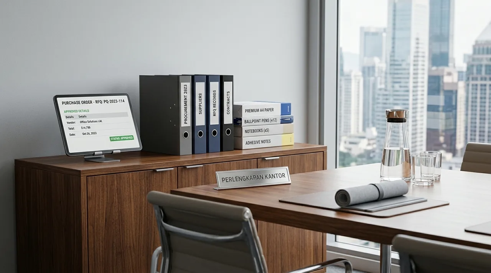

Bagaimana E-Procurement Mengatasi Bottleneck Operasional Divisi General Affairs?
Manfaat e-procurement kantor secara fundamental melenyapkan hambatan administratif melalui pemusatan katalog produk, otomasi alur persetujuan digital, dan integrasi pesanan langsung ke distributor resmi. Berdasarkan data Indonesia Corporate Procurement & Facility Index 2025-2026, sebanyak 78,6% tim operasional General Affairs di wilayah Jabodetabek kehilangan 15 hingga 20 jam kerja produktif per bulan hanya untuk mengurus verifikasi nota fisik, tawar-menawar harga dengan toko ritel eceran, dan pencatatan inventaris manual. Studi yang sama membuktikan bahwa perusahaan yang bermigrasi ke ekosistem e-procurement terintegrasi berhasil memangkas durasi siklus pembelian (purchase cycle time) hingga 64,2%, membebaskan staf GA untuk fokus pada tugas-tugas strategis seperti peningkatan kenyamanan ruang kerja dan pemeliharaan aset gedung.
Kendala utama pengadaan konvensional sering berakar pada proses birokrasi berjenjang yang lambat. Setiap kali divisi marketing, keuangan, atau operasional membutuhkan kertas HVS, tinta printer, atau filing cabinet tambahan, tim GA harus mencatat permintaan manual, mencari ketersediaan barang ke toko terdekat, meminta faktur proforma, lalu menunggu tanda tangan basah dari pimpinan. Jika salah satu mata rantai ini terhambat dinas luar kota, persediaan kantor bisa habis total. Platform digital Perlengkapan Kantor mengubah kerumitan tersebut menjadi proses sekali klik melalui katalog online yang telah disesuaikan dengan kebutuhan kontrak perusahaan Anda.
Apa Saja Fitur Kunci Sistem Procurement Digital ATK yang Wajib Dimiliki Perusahaan?
Fitur kunci sistem procurement digital ATK mencakup katalog produk terstandardisasi, formulir permintaan penawaran (RFQ) instan, multi-level approval, dan pelacakan pesanan pengiriman transparan. Saat memilih platform penyedia perlengkapan kantor B2B, tim operasional harus memastikan bahwa sistem tersebut dilengkapi modul fungsional yang benar-benar dirancang untuk kebutuhan tata kelola korporat:

Formulir persetujuan RFQ pengadaan perlengkapan kantor digital pada platform distributor resmi untuk verifikasi cepat dan transparan.
Modul Wajib Sistem Pengadaan Modern B2B:
- Katalog Produk Terstruktur dengan Spesifikasi Riil: Informasi akurat mengenai gramatur kertas, dimensi furnitur, daya listrik mesin kantor, dan masa garansi resmi agar pembeli tidak keliru memilih spesifikasi teknis.
- Sistem Request for Quotation (RFQ) Cepat: Kemampuan mengirim daftar kebutuhan custom dalam format digital dan menerima penawaran harga resmi (formal quotation) dalam hitungan jam kerja.
- Persetujuan Berjenjang (Multi-Tier Approval Matrix): Alur validasi otomatis di mana staf memasukkan draf pesanan, supervisor menerima notifikasi persetujuan di ponsel, dan purchase order (PO) langsung terbit ke distributor setelah disetujui.
- Penerbitan Invoice Bulanan dan Faktur Pajak Otomatis: Fasilitas pembayaran tempo (TOP - Term of Payment) dengan rekapitulasi tagihan bulanan terkonsolidasi lengkap dengan Faktur Pajak resmi bertandatangan digital.
Laporan B2B Supply Chain & Office Operational Benchmark Report 2025 mengungkapkan bahwa organisasi bisnis yang menggunakan portal e-procurement dengan fitur persetujuan bertingkat mampu menekan kebocoran anggaran belanja operasional rutin (OpEx) hingga 22,8% serta menghilangkan risiko pesanan ganda (duplicate orders) hingga 99,4%.
Perbandingan Sistem E-Procurement vs Pengadaan Manual Konvensional
Tabel komparasi sistem pengadaan kantor membuktikan keunggulan mutlak efisiensi waktu, transparansi biaya, dan kepatuhan perpajakan antara e-procurement modern melawan metode konvensional. Untuk memberikan gambaran komprehensif mengenai lompatan efisiensi yang didapatkan perusahaan, berikut adalah tabel komparasi antara metode e-procurement modern dari Perlengkapan Kantor dibandingkan proses belanja kantor manual tradisional:
| Parameter Evaluasi | Sistem E-Procurement Perlengkapan Kantor | Pengadaan Kantor Manual Tradisional |
|---|---|---|
| Waktu Siklus Pemesanan | 1 - 3 Jam (Pengajuan hingga PO Terbit) | 3 - 7 Hari Kerja (Tergantung Tanda Tangan Fisik) |
| Transparansi Harga Produk | Harga Kontrak Grosir Resmi & Mengikat | Fluktuatif Mengikuti Harga Ritel Toko Harian |
| Metode Permintaan Penawaran | Submit RFQ Online 1 Formulir Terpusat | Menghubungi Banyak Toko Satu per Satu |
| Kepatuhan Pajak & Administrasi | Otomatis Faktur Pajak & Invoice Resmi | Kuitansi Manual Sering Hilang / Tanpa NPWP |
| Otorisasi & Kontrol Anggaran | Otomatisasi Limit Approval Per Divisi | Rentan Terjadi Pembelian di Luar Budget |
| Konsolidasi Pengiriman | 1 Jadwal Logistik Langsung ke Alamat Kantor | Banyak Kurir Terpisah & Biaya Kirim Membengkak |
| Jaminan Garansi Unit | Garansi Resmi Distributor Perlengkapan Kantor | Sulit Klaim Garansi pada Toko Non-Resmi |
- Pengadaan perlengkapan kantor berkala melalui kontrak tahunan mengunci harga satuan dari fluktuasi inflasi pasar kertas dan material besi.
- Konsolidasi pengiriman 1 armada memangkas biaya logistik harian dan mengurangi polusi jejak karbon korporat.
- Kelengkapan dokumen Faktur Pajak yang tersinkronisasi otomatis mempermudah tim Finance saat audit pelaporan SPT Tahunan Badan.
Mengapa Integrasi Pengadaan Barang B2B Mampu Mencegah Fraud dan Mark-Up Harga?
Sistem e-procurement terintegrasi mencegah praktik fraud dan mark-up harga karena seluruh riwayat transaksi, histori harga kontrak, dan jejak audit tersimpan permanen secara digital. Dalam operasional harian perusahaan skala menengah hingga besar, pengadaan barang non-strategis seperti alat tulis kantor sering kali menjadi celah kerugian finansial kecil namun berulang (tail spend leak). Staf yang berbelanja ke toko ritel umum tanpa plafon harga tetap berpotensi menerima nota kosongan atau harga satuan yang telah dinaikkan. Selain itu, selisih kualitas barang antara yang diajukan dengan yang dibeli sering kali memicu sengketa internal.
Melalui portal korporat Perlengkapan Kantor, seluruh daftar barang yang dapat dipesan telah disetujui sebelumnya antara manajemen perusahaan dan tim kami (pre-approved vendor catalogue). Setiap pesanan memiliki rekam jejak digital (audit trail) yang tidak dapat dimanipulasi: siapa yang meminta, kapan disetujui, nomor resi pengiriman logistik, hingga tanda terima gudang. Dengan sistem transparansi mutlak ini, tim audit internal dan auditor eksternal dapat melakukan rekonsiliasi data belanja inventaris dalam hitungan detik tanpa perlu memeriksa ribuan lembar nota fisik.
- Katalog perabot kerja lengkap untuk korporasi pada kategori furnitur kantor kami.
- Penyediaan sistem pengarsipan aman dan efisien di lemari & rak arsip perkantoran.
- Paket bundling hemat meja dan kursi kerja modern pada penawaran paket furnitur kantor.
Bagaimana Cara Mengajukan RFQ E-Procurement Perlengkapan Kantor dengan Cepat?
Mengajukan RFQ pengadaan kantor secara digital dilakukan melalui pengunggahan daftar kebutuhan barang ke formulir online resmi untuk diverifikasi tim kalkulator Perlengkapan Kantor. Prosedur ini dirancang sangat ringkas agar pengadaan barang mendesak tidak terhambat:
- Identifikasi Kebutuhan Rutin dan Proyek: Kumpulkan rekapitulasi kebutuhan bulanan ATK divisi (seperti kertas HVS A4/F4, ordner arsip, bolpoin, binder clip) serta rencana pengadaan furnitur baru (meja partisi staff, kursi ergonomis, brankas dokumen).
- Kirim Dokumen RFQ ke Platform Resmi: Buka tautan layanan B2B Perlengkapan Kantor dan unggah dokumen Request for Quotation perusahaan Anda yang memuat rincian estimasi kuantitas dan rentang waktu pengiriman.
- Penerimaan Surat Penawaran Harga (SPH) Resmi: Tim konsultan procurement kami akan menghitung skema diskon volume grosir, ketersediaan stok di gudang utama Jakarta, serta kalkulasi ongkos logistik gratis untuk wilayah Jabodetabek.
- Penerbitan PO dan Pengiriman Bertahap: Setelah SPH disetujui direksi, perusahaan Anda menerbitkan Purchase Order (PO) resmi, dan tim logistik kami langsung menjadwalkan pengantaran barang dengan armada sendiri.
Pertanyaan Populer Seputar Manfaat E-Procurement Kantor (FAQ)
Kesimpulan Praktis
Peralihan dari metode pengadaan manual ke sistem e-procurement perlengkapan kantor merupakan investasi strategis yang memberikan imbal hasil nyata berupa penghematan waktu operasional divisi General Affairs hingga 64% serta efisiensi anggaran belanja rutin hingga lebih dari 20%. Dengan meniadakan beban tumpukan nota fisik, mencegah kecurangan harga, dan mengamankan pasokan barang berkualitas distributor resmi, perusahaan Anda dapat beroperasi jauh lebih lincah dan kompetitif.
Tingkatkan standar efisiensi manajemen kantor Anda hari ini bersama Perlengkapan Kantor. Hubungi tim B2B kami, kirimkan daftar kebutuhan pengadaan Anda, dan nikmati kemudahan pengelolaan inventaris kantor modern tanpa ribet!

Penulis: Tim Redaksi Perlengkapan Kantor
Divisi riset pengadaan barang korporat dan rantai pasok B2B di Perlengkapan Kantor. Berpengalaman mendampingi ratusan divisi General Affairs dalam implementasi portal e-procurement ATK, pengadaan perabot kantor, dan efisiensi anggaran operasional perusahaan. Ditinjau oleh Konsultan Efisiensi Pengadaan B2B & Supply Chain GA.